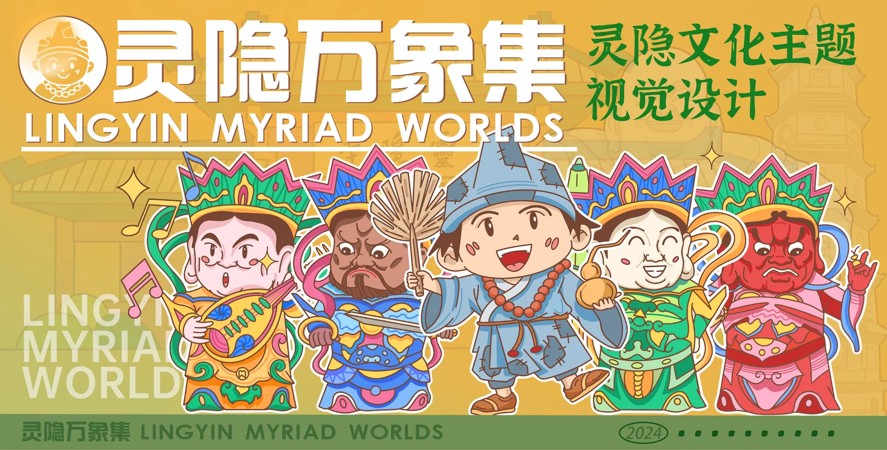
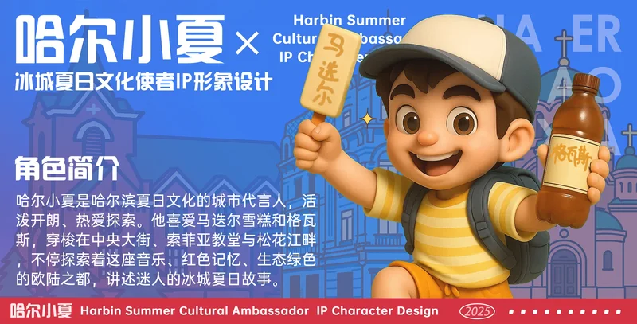

DESIGN / SELECTED WORKS
2024—2025 / 04 PROJECTS
文化，
可以被带走。
四组 IP 与文创项目，从城市文化、景区、寺院到博物馆。用调研找到文化母题，用视觉把它变成角色、产品和场景。
04组项目
45张项目板
02项全国奖项
 01 / 04
打开项目档案 ↗
01 / 04
打开项目档案 ↗
根宫佛国「无念熊」
为开化根宫佛国景区做一个有亲和力的「无念熊」，让传统文化从展柜里走到日常物件上。
查看项目板 →
02 / 04 打开项目档案 ↗灵隐万象集
把灵隐文化里的角色与符号，翻译成一套更年轻、更有亲近感的视觉语言。
查看项目板 →
03 / 04
打开项目档案 ↗
良渚博物院 IP 文创
把玉琮、神人兽面纹与陶器，变成三个可以走进年轻人日常的良渚角色。
查看项目板 →
04 / 04 打开项目档案 ↗哈尔滨夏日文化使者
把哈尔滨的夏日、冰雪记忆与城市性格，变成一个可以走进海报、文创与线下场景的角色。
查看项目板 →SELECTED FRAMES / 08
从调研到落地，
每一张都有来处。
项目板里不只有成品，也有市场分析、问卷、设计推演、三视图与场景应用。点击任意一张，进入它所在的项目档案。
DESIGN NOTE / 2026
设计不是给内容加装饰，
而是给信息建立秩序。
01
先理解文化
不从符号开始，而从场域、人群与使用场景开始。角色要能解释文化，而不只是像某种文化。
02
再建立系统
一个角色需要三视图、表情、色彩与应用规则。能延展，才算真正成立。
03
最后回到人
文创不是把图案印在物件上，而是让人愿意带走、使用、分享。
NEXT / OPERATIONS
看完设计，再看我如何把内容做成增长